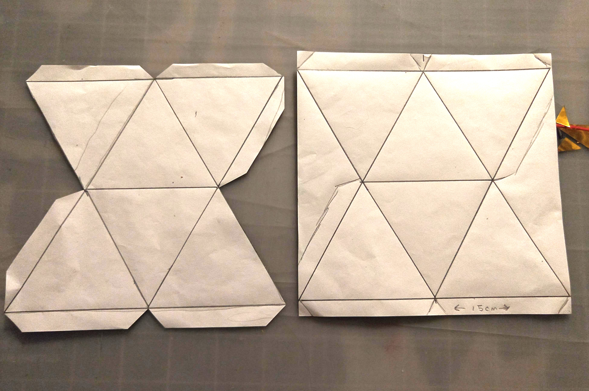

The Montessori Mobiles: Octahedron
Part 2: The Octahedron Mobile
In making these mobiles, it was very important to me that I make them “correctly” - I love the fact that in Montessori the approuch to figuring out what works well is very scientific i.e.. it is well thought out and then tested and adjusted until the material perfectly suits the needs of child development, so I don’t want to mess with a good thing. That being said, I am not the biggest fan of hologram paper; I seem to have some deep seated, negative, childhood associations with it that I can’t quite pinpoint. My solution is metalic oragami paper! It still has the colorful, reflective qualities of holographic paper and does’t seem to bother me quite so much. Hopefully they will still be as mezmorizing when presented to 2 month olds!
Materials
- cardstock in red, yellow, and blue
- metalic oragami paper in red, yellow/gold, and blue
- ruler, pencil, scissors
25 cm dowel rod (1⁄2 inch diameter), 15 cm dowel rod (1⁄2 inch diameter)
invisible/clear sewing thread or jewlery thread
Step 1 - I followed this tutorial to make octahedrons from cardstock https://www.youtube.com/watch?v=f7pSOE3PlDQ. It is in French, so for those of you who are not fluent in the language, she is making the equilateral triangles 7.5 cm on each side, such that the larger triangles (outlined in blue and black in the video) are 15 cm on each side. If you have a compass, great, but if not you can make the first equilateral triangle by drawing a line 15 cm long, marking the half way point (7.5cm) and then lightly drawing a perpendicular line from that point roughly 10 cm up. If you measure a line 15 cm between each endpoint and the perpendicular line, it will give you the other sides of the triangle.
Important Note Figure out how you want to hang the octahedrons before gluing the last top seam. I chose to use what I had on hand at the time, which was not the ideal material, so that I could have the thread coming straight out of the octahedron. I knotted it at one end, and then set the knot carefully inside the partially formed octahedron, so that once I sealed the last side the knot would be “trapped” inside. If I had the very fine invisible thread at the time, I probably would have tied it to a bead and used the bead for the same purpose as the knot.
Step 2 - If you want matte octahedrons, you can stop there, however I wanted them to be reflective. I created octahedrons in the same fashion, from oragami paper, to glue over the cardstock base (oragami paper on its own would never hold up to storage and use). Due to the size of oragami paper I bought (15 cm squares), I had to make each octahedron in two pieces - I am not sure if its possible to find metalic origami paper in a size large enough to make if from one piece. I free-handed extra “tabs” to accomodate the increased seams that result from forming an octahedron from two pieces. Each photo below has one completed piece (all lines drawn and cut out) and then another piece at each step of drawing the lines, to illustrate how I drew it out in the square. The final photo is the second piece that is needed to complete a full octahedron.
First draw out an equilateral triangle, 15 cm on each side, with a little room at the bottom for “tabs” to be made.
Mark the midway point on each side, at 7.5 cm from one corner, and then connect these dots to form an interior triangle.

Using a ruler, extend the two bottom sides of the interior triangle up to a length of 15 cm. Connect the endpoints of these lines, to form two additional equilateral triangles.
Using a compass or the “midpoint” trick I mentioned earlier, make two connected triangles (7.5 cm on each side) on a second piece of origami paper.
Part 3 - I chose to hang the octahedrons from two different dowels, instead of one. I don’t know which is more pedagogically accurate but felt that two dowels would help it to be more dynamic. There is a more thorough discussion in the Murani DIY about thread choices and how to hang each piece. As with that mobile, I opted for using the thinnest thread I could find, instead of fishing line, and drilled holes 3 cm each end of the dowels. I also used beads to secure the thread from slipping through the hole, although another solution is to hang the dowels with the holes parallel to the ground and have the thread go through the hole and then back down and tie it back on itself.